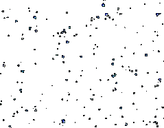
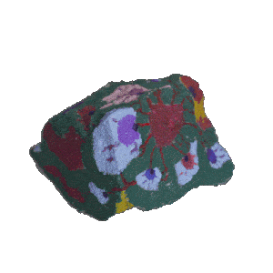
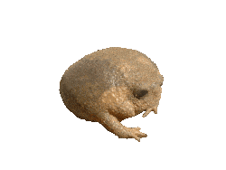
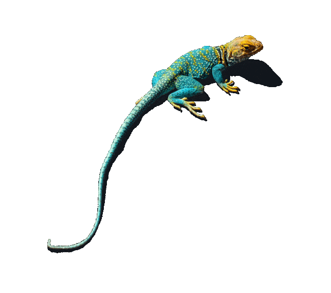

open to anyone who wanders in.
private rooms for family, partners and friends. sign in with Google, or with a code sent to your email, and you will see the doors that are yours.
sign in →The rainbow agama (Agama agama) is a lizard that turns orange, blue and violet when the sun is out and goes plain brown when it is not. Seemed right for a place that holds a yoga studio, a family partnership, a library of stories, a pile of research and a couple of joke shirt companies.
Everything here is made in Chattanooga, Tennessee, by Clay Thomas, mostly with Claude. If a door is locked and you think it should open for you, ask Clay.